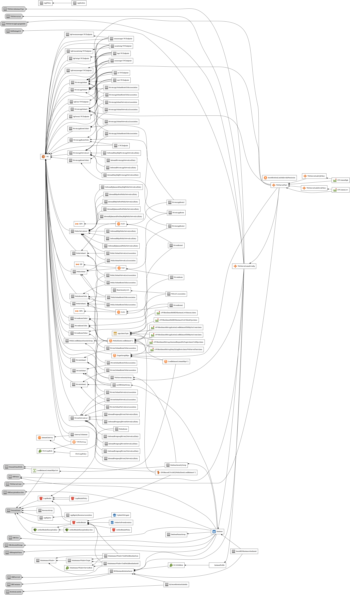

Citizen Intelligence Agency
The Citizen Intelligence Agency is a volunteer-driven, open-source intelligence (OSINT) project focusing on political activity in Sweden. By monitoring key political figures and institutions, the platform provides valuable insights into financial performance, risk metrics, and political trends. The dashboard features a ranking system, enabling users to objectively compare politicians based on performance. The initiative is independent and non-partisan, seeking to encourage informed decision-making, enhance transparency in governance, and cultivate an engaged and well-informed citizenry.
Features
Features of the CIA Project This document showcases the extensive features, providing detailed screenshots of dashboards, scoreboards, and critical analytics. The focus is on transparency, accountability, and data-driven decision-making in Sweden’s political ecosystem.
About Hack23
- Website: www.hack23.com
- LinkedIn: in/jamessorling
Data Sources
The project relies on open data from various sources, including:
- Swedish Parliament Open Data: Offers a wide range of data related to the Swedish Parliament, including members, committees, and documents.
- Swedish Election Authority: Provides information on election processes, results, and political parties in Sweden.
- World Bank Open Data: Contains global development data, including economic indicators and demographic information.
- Swedish National Financial Management Authority (ESV) Public Sector Information (PSI) Data: Offers data on government finances, economic trends, and public sector operations in Sweden.
Badges


Runtime (JDK 21+)


Resources
- Project Documentation (Maven Site) - Complete Maven-generated project documentation
- Features of the CIA Project This document showcases the extensive features, providing detailed screenshots of dashboards, scoreboards, and critical analytics. The focus is on transparency, accountability, and data-driven decision-making in Sweden’s political ecosystem.
- Project Architecture - Delve into the architecture of the Citizen Intelligence Agency. This overview provides a look at the enterprise context, system context, system containers, web application components, deployment strategy, and AWS account structure of the project.
- Entity Model - Explore our Entity Model which provides a detailed look at the entities in our system and their relationships. This page is particularly useful for understanding the data structure of our project.
- Api docs - Access the API documentation for the Citizen Intelligence Agency project. This documentation provides a detailed view of the various packages within the system, helping developers understand and work with the project's API.
- FinancialSecurityPlan.md - This financial plan provides a structured and cost-efficient deployment for your application infrastructure in the AWS eu-west-1 (Ireland) region. It integrates key components of scalability, security, and resilience to support critical workloads while maintaining budgetary control
- End-of-Life-Strategy.md Project End-of-Life (EOL) Strategy
Hack23 Live Services
| Service | Domain | Description |
|---|---|---|
| 🌐 Hack23 | hack23.com | Main website — cybersecurity consulting, project portfolio, and security blog |
| 🗳️ Riksdagsmonitor | riksdagsmonitor.com | Swedish Parliament Intelligence Platform — real-time analysis and 50+ years of historical data (1971-2024) |
| 🇪🇺 EU Parliament Monitor | euparliamentmonitor.com | European Parliament Intelligence Platform — automated multi-language news with 14-language support |
| 🔐 CIA Compliance Manager | ciacompliancemanager.com | Live demo — CIA triad security assessment with business impact analysis and compliance mapping (NIST, ISO, GDPR, HIPAA, SOC2) |
| 🔥 Black Trigram | blacktrigram.com | Realistic 2D precision combat simulator inspired by traditional Korean martial arts |
| 📖 Security Blog | hack23.com/blog.html | 30+ Discordian Cybersecurity posts — ISMS policies and cybersecurity best practices |
Hack23 Projects
🔐 Commitment to Transparency and Security
At Hack23 AB, we believe that true security comes through transparency and demonstrable practices. Our Information Security Management System (ISMS) is publicly available, showcasing our commitment to security excellence and organizational transparency.
- ISMS-PUBLIC — Complete ISMS framework available for review
- Discordian Cybersecurity — Explore information security through the unique Discordian lens
🗳️ Political Intelligence Platforms
| Project | Description | Live Service | Links |
|---|---|---|---|
| Riksdagsmonitor | Swedish Parliament Intelligence Platform monitoring political activity with real-time analysis and 50+ years of historical data | riksdagsmonitor.com | |
| EU Parliament Monitor | Automated multi-language news platform monitoring EU Parliament activities with 14-language support | euparliamentmonitor.com | |
| EU Parliament MCP Server | Model Context Protocol Server providing AI assistants with structured access to European Parliament Open Data | npm | |
| Citizen Intelligence Agency | Political transparency platform monitoring Swedish political activity with data-driven insights and analytics | — |
🔒 Security and Compliance Tools
| Project | Description | Live Service | Links |
|---|---|---|---|
| CIA Compliance Manager | Security assessment platform for the CIA triad with business impact analysis and compliance mapping to NIST, ISO, GDPR, HIPAA, SOC2 | ciacompliancemanager.com | |
| Sonar CloudFormation Plugin | SonarQube plugin for analyzing AWS CloudFormation templates with security best practices based on NIST, CWE, and ISO standards | Maven Central |
🛠️ Infrastructure and Development Tools
| Project | Description | Live Service | Links |
|---|---|---|---|
| Lambda in Private VPC | Enterprise-grade multi-region active/active architecture with near-zero recovery time and AWS Resilience Hub compliance | — | |
| Game Template | Secure game development template with React, TypeScript, Three.js, and Vite — built with security-first principles | — | |
| Black Trigram | Realistic 2D precision combat simulator inspired by traditional Korean martial arts | blacktrigram.com |
Reporting Security Issues
Please follow the instructions in our SECURITY.md file for reporting security issues.
Project Technology Stack Overview
This document provides a high-level overview of the key technologies used within the Citizen Intelligence Agency (CIA) project. Each technology plays a vital role in supporting CIA’s goals for data analysis, security, and scalability within the political intelligence domain.
| Category | Technologies |
|---|---|
| Core Framework | Spring Framework |
| Security | Spring Security, Bouncy Castle |
| Data Access | Hibernate, JPA, PostgreSQL, JDBC |
| Transaction Management | Narayana (Integrated with Spring JpaTransactionManager) |
| Data Auditing | Javers |
| Business Rules Engine | Drools |
| Messaging | ActiveMQ Artemis, Spring JMS |
| Web/UI Layer | Vaadin, Vaadin Sass Compiler, Vaadin Themes |
| Monitoring | JavaMelody, AWS SDK for CloudWatch |
| Testing | JUnit, Mockito, Spring Test, Selenium WebDriver |
| Utilities | Apache Commons, Google Guava, SLF4J, Logback, Jackson |
| Build & Dependency Management | Maven |
Stack Summary
This stack comprises:
- Core Framework: The project uses Spring Framework to provide a foundation for dependency injection, component management, and service configuration across modules.
- Security: Spring Security manages authentication and authorization, complemented by Bouncy Castle for cryptographic operations.
- Data Access: A combination of Hibernate, JPA, and PostgreSQL supports robust ORM-based data persistence, with JDBC facilitating additional database connectivity needs.
- Transaction Management: The project uses Narayana as the transaction manager implementation, integrated with Spring’s JpaTransactionManager for distributed transaction support and ensuring transactional integrity.
- Data Auditing: Javers provides auditing and historical versioning, allowing for tracking and comparing changes to data over time.
- Business Rules Engine: Drools is integrated into the CIA project to enable a robust business rules engine.
- Messaging: ActiveMQ Artemis and Spring JMS enable asynchronous communication between application components, supporting distributed and event-driven designs.
- Web/UI Layer: Vaadin powers the UI with a server-driven architecture, providing components like Vaadin Themes and Sass Compiler for a rich, interactive frontend experience directly in Java.
- Monitoring: JavaMelody and AWS SDK for CloudWatch provide real-time application monitoring and logging capabilities, supporting both local and cloud environments.
- Testing: JUnit, Mockito, Spring Test, and Selenium WebDriver are used extensively for unit, integration, system, browser, and mock testing to ensure application reliability and robustness.
- Utilities: Apache Commons, Google Guava, SLF4J, and Logback offer utility functions and structured logging, enhancing application maintainability and monitoring.
- Build & Dependency Management: Maven handles project builds, dependency management, and plugin configurations, enabling smooth project management and modular builds.
AWS Services Stack Overview
This document provides a comprehensive summary of the AWS services utilized in the Citizen Intelligence Agency (CIA) project infrastructure, as defined by its CloudFormation template. These services work together to ensure a secure, resilient, and scalable deployment environment.
| Category | AWS Services | NIST CSF Function, Category & Subcategory | ISO 27001:2022 Control & Link |
|---|---|---|---|
| Networking and Security | - Amazon VPC: Configures a custom network environment with public/private subnets, route tables, NAT Gateway, Network ACLs (NACLs) for traffic control, and VPC Flow Logs. - VPC Endpoints: Enables private access to AWS services (e.g., S3, EC2, SSM, CloudWatch Logs). - AWS WAF: Protects against web attacks at the ALB layer. - AWS IAM: Manages role-based access control. - AWS KMS: Manages encryption for data at rest. | Identify (ID): - Asset Management (ID.AM-2) Protect (PR): - Access Control (PR.AC-1, PR.AC-3, PR.AC-5) - Data Security (PR.DS-1, PR.DS-2) - Protective Technology (PR.PT-3) Detect (DE): - Security Continuous Monitoring (DE.CM-3) | - A.8.1: Asset management - A.9.4.1: Access control policy - A.13.1.1: Network controls - A.13.1.3: Segregation in networks - A.18.1.5: Regulation and compliance (ISO 27001) |
| Domain and SSL Management | - Amazon Route 53: Manages domain registration and DNS routing. - AWS Certificate Manager (ACM): Issues and manages SSL/TLS certificates. | Protect (PR): - Data Security (PR.DS-5) Detect (DE): - Anomalies and Events (DE.AE-3) | - A.10.1.1: Cryptographic controls for data protection - A.12.4.3: Security of network services |
| Compute | - Amazon EC2: Provides scalable compute instances. | Protect (PR): - Protective Technology (PR.PT-1) Respond (RS): - Analysis (RS.AN-1), Mitigation (RS.MI-2) | - A.12.1.3: Capacity management for IT infrastructure and services |
| Load Balancing | - Application Load Balancer (ALB): Distributes HTTP/HTTPS traffic across EC2 instances. | Protect (PR): - Protective Technology (PR.PT-3) Respond (RS): - Communications (RS.CO-2) | - A.13.1.1: Network controls - A.13.2.1: Information transfer policies |
| Data Storage | - Amazon S3: Stores application artifacts and logs with encryption, access control, and lifecycle policies. - Amazon RDS: PostgreSQL database with multi-AZ deployment. | Protect (PR): - Data Security (PR.DS-1, PR.DS-5) - Information Protection Processes and Procedures (PR.IP-3, PR.IP-4) - Maintenance (PR.MA-1) Recover (RC): - Recovery Planning (RC.RP-1), Communications (RC.CO-2) | - A.8.2.3: Information backup - A.10.1.1: Use of cryptographic controls |
| Secrets Management | - AWS Secrets Manager: Securely stores and rotates sensitive credentials with Lambda rotation support. | Protect (PR): - Access Control (PR.AC-1, PR.AC-4) - Data Security (PR.DS-6) - Identity Management and Access Control (PR.AC-7) | - A.9.2.2: User access provisioning - A.10.1.1: Management of encryption keys and secret information |
| Monitoring and Alarms | - Amazon CloudWatch: Provides real-time metrics, logs, and alarms to monitor performance and health. | Detect (DE): - Security Continuous Monitoring (DE.CM-3) | - A.12.4.1: Monitoring activities |
| Resilience and Disaster Recovery | - AWS Resilience Hub: Assesses and improves the architecture’s resilience, recommending strategies for fault tolerance and disaster recovery. | Recover (RC): - Recovery Planning (RC.RP-1), Improvements (RC.IM-1) | - A.17.1.2: Implementing continuity controls - A.17.2.1: Availability of information processing facilities |
| Automation and Maintenance | - AWS Systems Manager (SSM): Automates inventory, patching, and maintenance tasks, with SSM Maintenance Windows and SSM Patch Baselines for streamlined operations. | Protect (PR): - Maintenance (PR.MA-1, PR.MA-2) - Protective Technology (PR.PT-1) | - A.12.6.1: Control of technical vulnerabilities - A.12.7.1: Information systems audit considerations |
AWS Stack Summary
-
Networking and Security: Amazon VPC creates an isolated network environment with NAT Gateway, NACLs, and VPC Flow Logs. VPC Endpoints provide private access to AWS services (e.g., S3, EC2, SSM), AWS WAF protects against web attacks, AWS IAM secures access control, and AWS KMS encrypts data at rest.
-
Domain and SSL Management: Amazon Route 53 handles DNS and domain registration, while AWS Certificate Manager (ACM) provides SSL/TLS certificates for HTTPS security.
-
Compute Layer: Amazon EC2 instances host the application, providing flexible and scalable compute resources.
-
Load Balancing: The Application Load Balancer (ALB) distributes HTTP/HTTPS traffic across EC2 instances, optimizing for high availability and resilience.
-
Data Storage: Amazon RDS offers a resilient PostgreSQL setup with multi-AZ deployment and custom parameter groups. Amazon S3 securely stores artifacts and logs, with lifecycle policies and KMS-managed encryption keys for compliance.
-
Secrets Management: AWS Secrets Manager securely stores and rotates credentials, such as database passwords, with automated Lambda support for rotation.
-
Monitoring and Alarms: Amazon CloudWatch monitors infrastructure health through metrics, logs, and alarms, enabling proactive management.
-
Resilience and Disaster Recovery: AWS Resilience Hub assesses and recommends enhancements to improve the system's resilience, providing disaster recovery and fault-tolerant strategies.
-
Automation and Maintenance: AWS Systems Manager (SSM) automates inventory, patching, and other maintenance tasks, increasing operational efficiency.
Deploying to AWS using CloudFormation
The Citizen Intelligence Agency (CIA) project can be deployed on AWS using the provided CloudFormation stack file. This file is located in the cia-dist-cloudformation/src/main/resources/cia-dist-cloudformation.json folder.
You can find the CloudFormation stack file here.
Launching the CloudFormation Stack
To launch the CloudFormation stack, follow these steps:
-
Log in to your AWS Management Console.
-
Navigate to the CloudFormation service.
-
Click on Create stack.
-
In the Select Template section, choose Upload a template file and upload the
cia-dist-cloudformation.jsonfile. -
Click Next.
-
Fill out the Stack name and any required parameters. The parameters are described in the CloudFormation stack file. Adjust them according to your requirements.
-
Click Next to configure stack options. You can add tags or configure advanced options as needed.
-
Click Next to review your stack settings. Make sure everything is set up as desired.
-
In the Capabilities section, check the boxes for the following options:
- I acknowledge that AWS CloudFormation might create IAM resources.
- I acknowledge that AWS CloudFormation might create IAM resources with custom names.
-
Click Create stack to start the stack creation process. AWS CloudFormation will create the required resources and deploy the CIA project.
-
Once the stack creation process is complete, you can access the application by navigating to the output URL provided in the CloudFormation stack Outputs tab.
Diagrams


Installing Debian/Ubuntu package
This guide will walk you through installing the CIA project on Debian and Ubuntu 24.04+ systems.
Prerequisites
-
Add the PostgreSQL PGDG repository (required for PostgreSQL 18 on Ubuntu 24.04):
sudo install -d /usr/share/postgresql-common/pgdg sudo curl -o /usr/share/postgresql-common/pgdg/apt.postgresql.org.asc --fail https://www.postgresql.org/media/keys/ACCC4CF8.asc echo "deb [signed-by=/usr/share/postgresql-common/pgdg/apt.postgresql.org.asc] https://apt.postgresql.org/pub/repos/apt $(lsb_release -cs)-pgdg main" | sudo tee /etc/apt/sources.list.d/pgdg.list sudo apt-get update -
Install OpenJDK and PostgreSQL:
sudo apt-get install openjdk-21-jdk postgresql-18 postgresql-contrib-18 postgresql-18-pgaudit postgresql-18-pgvector
Database Setup
-
Create an empty database:
Below instructions set the default username/password and database name used for development. We recommend using custom credentials and updating the configuration at
/opt/cia/webapps/cia/WEB-INF/database.propertiesto define your own username/password and database name.sudo su - postgres psqlCREATE USER eris WITH password 'discord'; CREATE DATABASE cia_dev; GRANT ALL PRIVILEGES ON DATABASE cia_dev to eris;
PostgreSQL Configuration
-
Enable prepared transactions and required extensions:
Edit
/etc/postgresql/18/main/postgresql.confand set:max_prepared_transactions = 100 shared_preload_libraries = 'pg_stat_statements, pgaudit, pgcrypto' pgaudit.log = ddl pg_stat_statements.track = all pg_stat_statements.max = 10000 -
Modify PostgreSQL settings:
Edit
/etc/postgresql/18/main/pg_hba.confand add the following line:host all all ::1/128 md5 -
Restart PostgreSQL:
service postgresql restart
Install CIA Debian Package
-
Download the CIA Debian package:
wget https://github.com/Hack23/cia/releases/download/2025.1.2/cia-dist-deb-2025.1.2.all.deb -
Install the Debian package:
sudo dpkg -i cia-dist-deb-2025.1.2.all.deb
Access the Server
- Access the server at https://localhost:28443/cia/.
Citizen Intelligence Agency - Sweden Political Activity Dashboard
Welcome to the Citizen Intelligence Agency - Sweden Political Activity Dashboard repository. This project provides a comprehensive and neutral dashboard focusing on political activity in Sweden. By monitoring key political figures and institutions, we offer valuable insights into financial performance, risk metrics, and political trends.
Our dashboard offers a detailed overview of political figures, comprehensive data on various ministries, performance metrics, and visual data representation. Check out our dashboard.md for more details.
Medborgarunderrättelsebyrån - Sverige Politisk aktivitetsdashboard
Medborgarunderrättelsebyrån tillhandahåller en neutral och omfattande dashboard som fokuserar på politisk aktivitet i Sverige. Genom att övervaka nyckelpolitiska figurer och institutioner erbjuder plattformen värdefulla insikter i finansiell prestanda, riskmetriker och politiska trender. Detta projekt drivs av avancerade AI-teknologier som OpenAI och datavisualiseringsverktyg som Daigram.
Vår dashboard erbjuder en detaljerad översikt över politiska figurer, omfattande data om olika departement, prestandametriker och visuell datarepresentation. Kolla in vår dashboard_sv.md för mer information.
AI and Data Visualization
This project is powered by advanced AI technologies like OpenAI for data processing and analysis. We use AI to process and analyze a large amount of data from various open sources such as the Swedish Parliament, Swedish Election Authority, World Bank, and the Swedish National Financial Management Authority. The analyzed data is then represented visually through data visualization tools like Daigram.